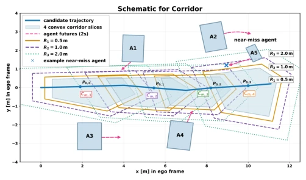
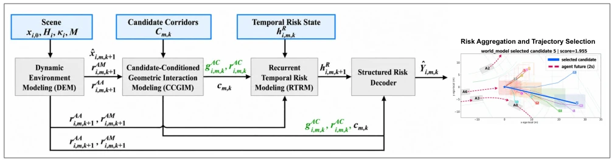
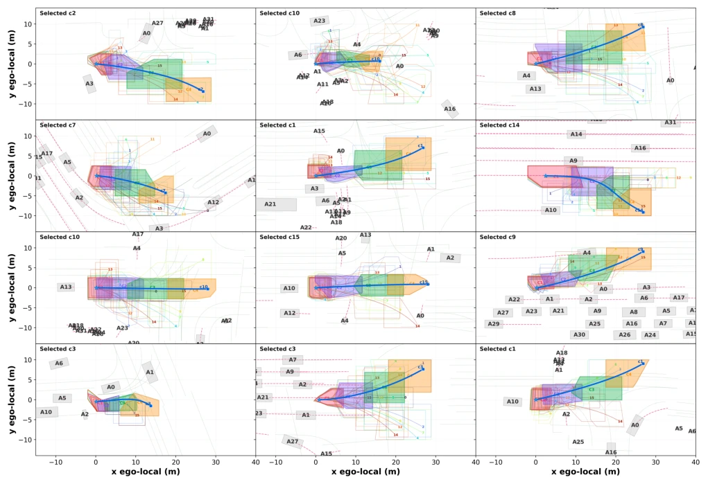

这篇论文给自动驾驶规划模块装上了一个“风险雷达”。CorrRisk-WM 本质上是个规划导向的局部世界模型，核心在于把候选轨迹走廊（Corridor）作为时空查询，去预测周围车辆的入侵和近距碰撞风险。亮点在于它没有试图重建整个场景的未来视频，而是专注于预测“会不会撞”和“什么时候撞”，这在计算效率上很务实。但吐槽点也很明显：它假设周围车辆是“非反应性”的（non-reactive），这意味着它忽略了博弈论层面的交互，其他车可能根本不在乎你的轨迹。此外，虽然叫 World Model，其实更像是一个强化版的风险预测器，依赖 IRIS 走廊生成，如果走廊本身规划得烂，模型再强也救不了。总的来说，是个在安全关键场景下很实用的工程化方案，但别指望它能像人类司机那样理解复杂的社会交互。
This paper equips the autonomous driving planning module with a "risk radar". CorrRisk-WM is essentially a planning-oriented local world model, the core of which lies in treating candidate trajectory corridors (Corridor) as spatio-temporal queries to predict intrusion and near-collision risks of surrounding vehicles. The highlight is that it does not attempt to reconstruct the future video of the entire scene, but focuses on predicting "whether it will collide" and "when it will collide", which is pragmatic in terms of computational efficiency. However, the drawback is also obvious: it assumes surrounding vehicles are "non-reactive" (non-reactive), which means it ignores game-theoretic level interactions, and other vehicles may not care about your trajectory at all. Furthermore, although called World Model, it is actually more like an enhanced risk predictor, relying on IRIS corridor generation; if the corridor itself is planned poorly, no matter how strong the model is, it cannot save it. Overall, it is a very practical engineering solution in safety-critical scenarios, but do not expect it to understand complex social interactions like a human driver.
The core difficulty of safety local planning lies in that the same surrounding vehicle motion trajectories have completely different risk levels for different self-vehicle candidate trajectories (ego trajectories). Existing interaction prediction methods [1] and hierarchical trajectory generation [2] often decouple risk assessment from motion prediction, making it difficult for the planner to directly utilize prediction uncertainty. Although World Models (World Models) have emerged in autonomous driving [6, 7], most focus on visual future generation or occupancy grid prediction [27, 28], lacking explicit geometric risk quantification for candidate trajectory corridors (corridors). For example, RiskWorld [32] predicts object-level risk, but CorrRisk-WM points out that risk should be predicted as structured agent-candidate-time corridor events. Furthermore, existing corridor methods [9, 11] are mostly used for constraint optimization and are not deeply coupled with dynamic environment evolution. Therefore, this paper aims to solve the decoupling problem between risk prediction and candidate trajectory geometric interaction, achieving safer critical trajectory planning.

Fig. 1. Temporal corridor representation: a candidate trajectory (blue), four shaded corridor slices, near-miss contours at 0.5, 1.0, and 2.0 m, and surrounding agents A1–A5 with 2-s future motion.
The overall process of CorrRisk-WM is to convert each candidate trajectory into a series of IRIS corridor slices, and recursively predict risk on these slices. First, the Dynamic Environment Modeling (DEM) module encodes the interaction between agents and the map through self-attention mechanisms (AA/AM), utilizing latent state transition (TE) and state probe (DX) to recursively predict future agent states. Second, the Candidate Condition Geometric Interaction Modeling (CCGIM) module is the key innovation, which encodes corridor slices as spatio-temporal queries, calculates the geometric distance between agent footprints and corridors (footprint-aware clearance), and filters relevant agents based on closing speed and time-to-corridor (TTC), fusing geometric features with latent states. Next, the Recursive Temporal Risk Modeling (RTRM) utilizes recurrent units (GRUCell) to update risk context on time slices, capturing temporal dependencies. Finally, the Structured Risk Decoder outputs hazards, probabilities, and time distributions for intrusion and near-collision. The entire system calculates the probability of the first event through survival aggregation (survival aggregation), and finally selects the optimal trajectory by combining risk scores and route progress.

Fig. 2. Overview of the CorrRisk-WM framework.
实验Experiments
实验基于 Waymo Open Motion Dataset 的 29,176 个验证场景。对比基线包括恒速模型（CV）、高斯重叠（Gauss-512）、潜在动力学几何（LDG）和 MLP 几何（MLP-GEO）。评价指标涵盖入侵 AP、多阈值近距碰撞 AP、开环碰撞率及路线进度。结果显示，CorrRisk-WM 在所有三个距离阈值（0.5/1.0/2.0m）的近距碰撞 AP 上均最高（0.8671@1m），且开环碰撞率最低（4.88%），优于 MLP-GEO 约 8.1%。消融实验表明，移除动态环境建模（DEM）会导致入侵 AP 从 0.8590 降至 0.7624，移除几何交互（CCGIM）降幅更大至 0.7252，证实了这两部分是核心贡献。尽管 LDG 在入侵 AP 上略高，但 CorrRisk-WM 在安全关键指标上表现更均衡。
Experiments are based on 29,176 validation scenes from the Waymo Open Motion Dataset. Comparison baselines include Constant Velocity model (CV), Gaussian Overlap (Gauss-512), Latent Dynamics Geometry (LDG), and MLP Geometry (MLP-GEO). Evaluation metrics cover Invasion AP, multi-threshold near-collision AP, open-loop collision rate, and route progress. Results show that CorrRisk-WM achieves the highest near-collision AP on all three distance thresholds (0.5/1.0/2.0m) (0.8671@1m), and has the lowest open-loop collision rate (4.88%), outperforming MLP-GEO by about 8.1%. Ablation studies show that removing Dynamic Environment Modeling (DEM) causes Invasion AP to drop from 0.8590 to 0.7624, removing Geometric Interaction (CCGIM) drops further to 0.7252, confirming these two parts are core contributions. Although LDG is slightly higher on Invasion AP, CorrRisk-WM performs more balanced on safety-critical metrics.

Fig. 3. Visualization of corridor-conditioned ego-trajectory selection across 12 Waymo validation scenarios.